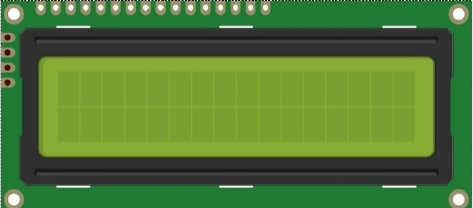

ESP32-S3 board
The brain that runs your uploaded sketch.
TinySkiff ESP32-S3 Lab · Day 25 of 30
Today the project gets a face. You wire the LCD1602's four pins to the board, add one library to the Arduino IDE, and upload a sketch that greets you on the top row while the bottom row counts the seconds. The screen rides on just two signal wires — a shared bus the board could hang many more devices off, each one called up by its own address.
TSK-DAY25-LCD
Hand this to an agent so it can pull the lesson packet and coach you step by step.
01 First, know the pieces
Five things, and only four wires between them. Tap Define on any part you haven't met — the answer opens as a field note you can read and dismiss without losing your place.
The brain that runs your uploaded sketch.

Spreads the pins into rows you can reach and label.

A sixteen-by-two character screen with an I2C backpack on its back.

Female ends slide onto the module's pins; male ends reach the board.

Uploads the sketch to the board.
02 Make the physical circuit
The official Freenove diagram is your chart — schematic on top, the same circuit built on a breadboard below. Click it to enlarge. Four wires today, all from the little backpack board soldered to the back of the screen.
Mind the 5V pin. The module's VCC wants the board's 5V pin — on 3.3V the display runs faint or dark. Unplug USB before you move any wire.
03 One action at a time
This is the main path — you can finish the day without opening a single field note. Tap each step as you go to keep your place.
Seat the ESP32-S3 on the GPIO extension board and keep USB unplugged while you wire.
Turn the LCD module over and find the four labelled pins on its backpack — GND, VCC, SDA, SCL.
Slide female jumper ends onto GND and VCC, then land them on the board's GND and 5V pins.
Wire SDA to GPIO 14 and SCL to GPIO 13.
Compare every wire to the chart before you plug in USB.
In Arduino IDE choose Sketch → Include Library → Add .ZIP Library… and pick LiquidCrystal_I2C-1.1.2.zip from the kit download's C/Libraries folder — you install it once and it stays.
Open Sketch_18.1_Display_the_string_on_LCD1602.ino and upload it. (Wire.h, the I2C library, ships with the board package.)
Watch row 0 greet you and row 1 start counting seconds.
04 Read just enough code
The sketch does its real work in setup — start the I2C bus, find the display's address, wake it, and print the greeting. The loop then rewrites row 1 once a second with the count. Switch to MicroPython if you'd rather see the same idea in Python — the wiring never changes.
#include <LiquidCrystal_I2C.h>
#include <Wire.h>
#define SDA 14 //Define SDA pins
#define SCL 13 //Define SCL pins
/*
* note:If lcd1602 uses PCF8574T, IIC's address is 0x27,
* or lcd1602 uses PCF8574AT, IIC's address is 0x3F.
*/
LiquidCrystal_I2C lcd(0x27,16,2);
void setup() {
Wire.begin(SDA, SCL); // attach the IIC pin
if (!i2CAddrTest(0x27)) {
lcd = LiquidCrystal_I2C(0x3F, 16, 2);
}
lcd.init(); // LCD driver initialization
lcd.backlight(); // Open the backlight
lcd.setCursor(0,0); // Move the cursor to row 0, column 0
lcd.print("hello, world!"); // The print content is displayed on the LCD
}
void loop() {
lcd.setCursor(0,1); // Move the cursor to row 1, column 0
lcd.print("Counter:"); // The count is displayed every second
lcd.print(millis() / 1000);
delay(1000);
}
bool i2CAddrTest(uint8_t addr) {
Wire.beginTransmission(addr);
if (Wire.endTransmission() == 0) {
return true;
}
return false;
}Wire.begin(SDA, SCL)Starts the I2C bus with GPIO 14 as the data line and GPIO 13 as the clock. LiquidCrystal_I2C lcd(0x27,16,2)Names the display by its bus address — 16 columns, 2 rows. If nothing answers at 0x27, i2CAddrTest lets the sketch switch to 0x3F by itself. lcd.setCursor(0,1)Parks the cursor at column 0 of row 1 so the next print lands on the bottom row.lcd.print(millis() / 1000)Prints the seconds since the board booted — the running count you see tick. Optional side path · same circuit
i2c = I2C(scl=Pin(13), sda=Pin(14), freq=400000)
devices = i2c.scan()
lcd = I2cLcd(i2c, device, 2, 16)
lcd.move_to(0, 0)
lcd.putstr("Hello,world!")
count = 0
while True:
lcd.move_to(0, 1)
lcd.putstr("Counter:%d" %(count))
time.sleep_ms(1000)
count += 1devices = i2c.scan()Asks every address on the bus and uses whichever one answers — the same job the Arduino sketch's address test does.lcd.putstr("Counter:%d" %(count))Rewrites row 1 with the running count once a second.Same pins, same wiring. This path needs two helper modules — I2C_LCD.py and LCD_API.py from the same kit folder — copied onto the board before it runs. Run it in Thonny if MicroPython is set up; otherwise skip it — it should never block the Arduino-first path.
05 Understand, don't memorise
A bare LCD1602 has a row of pins that each carry one signal, and driving it directly means wiring about a dozen of them. The little backpack on the back trades that for two wires by putting the display on an I2C bus — the same two-wire scheme most screens and sensors use. Understanding the bus is worth more than today's circuit, because you'll meet it again and again.
A bare character LCD expects a fistful of parallel wires, one per signal. Wiring that by hand for every display would fill the board fast.
The backpack chip takes bytes over just two lines: SDA carries the data one bit at a time, and SCL is a clock that ticks so both ends agree when each bit counts.
The board is the one that starts every exchange. Devices sit on the bus and listen, and reply only when they're spoken to — so many can share the same two wires without talking over each other.
The board opens each message with a number — the device's address. This display answers to 0x27 (some boards to 0x3F). Send to the wrong number and the display never hears its name, so the screen stays blank.
Once it's addressed and awake, the LCD holds a grid of sixteen columns by two rows. You set a cursor to a row and column, then print, and the characters land at that spot.
a dozen pins → two shared wires → the right address → cursor at row and column → characters
The bits travel single file down SDA the way they travel down USB to your Serial Monitor. The extra wire, SCL, is a shared clock that tells both ends exactly when to read each bit — which is what lets several devices share one pair of lines.
The backpack's PCF8574T chip answers at 0x27, while the PCF8574AT version answers at 0x3F. The sketch pings 0x27 first, and when nothing replies it switches to 0x3F on its own — a small demonstration that a wrong address means silence.
06 Know it worked
Nothing prints to the Serial Monitor today — the proof is written on the glass in front of you.
A glowing backlight with blank rows is normal at first — the contrast dial on the back of the module sets whether characters show, and it often ships turned too far.
07 Make the idea yours
Same working circuit. The first two cards make the row-and-column model real by putting your own text exactly where you want it. The last one asks you to predict what the bus does when the address is wrong — no wiring change needed.
Change lcd.print("hello, world!") to your boat's name and upload. Row 0 is yours now — the greeting was only ever text you were free to replace.
Before that print, add lcd.setCursor(4,0) and upload again. The word now starts four columns in. Try other numbers from 0 to 15 and watch the text slide along the row — that pair is column then row, the display's whole coordinate system.
The sketch tries 0x27, and if nothing answers it falls back to 0x3F. Ask yourself: if you forced the address to a number no device on your bus uses, what would the screen do — and why? Then look back at the backlight-on-but-blank case in Test & debug and see if your reasoning matches.
08 Learn it with a hand on the tiller
Every lesson ships with a code and a machine-readable packet, so an agent can guide you with full context.
TSK-DAY25-LCD
How the agent should behave: guide one physical connection at a time and wait for confirmation, then teach the I2C bus behind the circuit — two shared wires, a clock, and each device reached by its own address. Always check wiring, board, port, and USB before changing code.